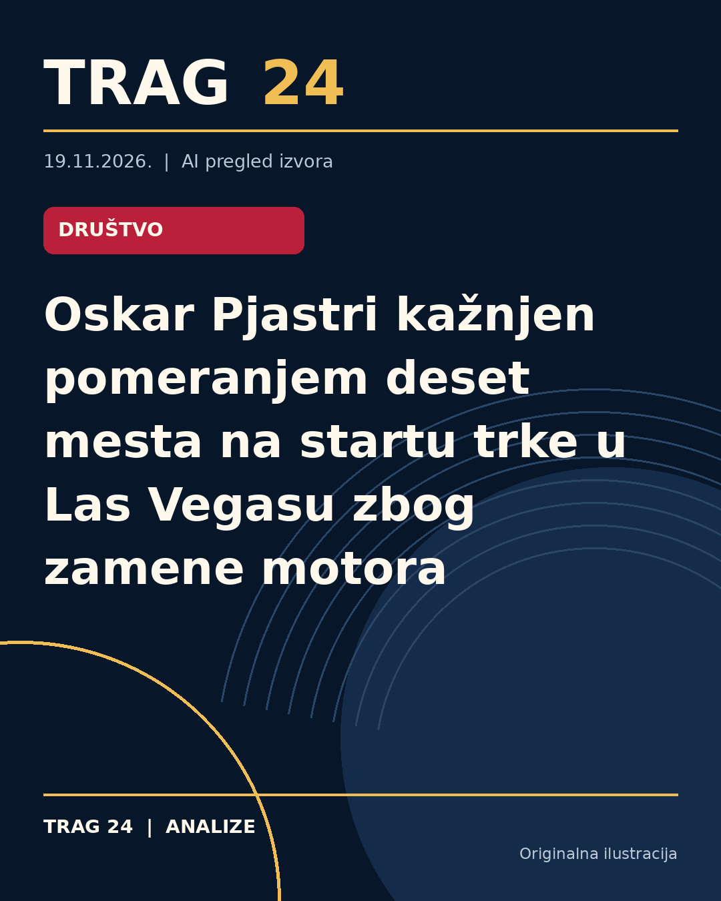

Oskar Pjastri kažnjen pomeranjem deset mesta na startu trke u Las Vegasu zbog zamene motora

ŠTA SE DOGODILO
Vozač Meklarena, Australijanac Oskar Pjastri, biće pomeren deset mesta unazad na startu Velike nagrade Las Vegasa u Formuli 1. Kazna je izrečena zbog ugradnje novog motora sa unutrašnjim sagorevanjem, čime je prekoračena sezonska kvota od dozvoljenih četiri takva motora.
HRONOLOGIJA
Pre početka Velike nagrade Las Vegasa, zvanični sajt Formule 1 objavio je da je Pjastri kažnjen zbog prekoračenja dozvoljene kvote motora. Kvalifikacije za trku zakazane su za 21. novembar, dok je trka na programu 22. novembra, oba događaja počinju u pet sati po centralnoevropskom vremenu.
ŠTA NAVODE IZVORI
Zvanični sajt Formule 1 i tim Meklarena navode da će Pjastri startovati sa niže pozicije zbog kazne, ali veruju da staza u Las Vegasu pruža dobre šanse za povratak izgubljenih mesta preticanjem. Pozicija pomeranja za deset mesta potvrđena je u oba izvora, kao i razlog – ugradnja novog motora.
ŠTA JE POTVRĐENO
Pjastri će startovati sa pozicije pomerenom deset mesta unazad u odnosu na plasman iz kvalifikacija. Kazna je posledica prekoračenja dozvoljene kvote motora sa unutrašnjim sagorevanjem, koja je četiri po sezoni. Kvalifikacije i trka održavaju se 21. i 22. novembra u Las Vegasu po centralnoevropskom vremenu.
ŠTA NIJE POTVRĐENO
Nema dodatnih detalja o specifičnom motoru koji je ugrađen, niti o tome da li će sama kazna ili situacija uticati na ostale tehničke aspekte učešća vozača u trci. Takođe, nisu dostupne informacije o eventualnim reakcijama Pjastrija ili drugih timova na ovu odluku.
ŠTA OSTАJE OTVORENO: Ostaje nepoznato kako će se Pjastri snaći tokom same trke i koliko će zaista biti uspešan u obilaženju rivala na ovom specifičnom stazi. Nema podataka o mogućim posledicama za Meklaren u daljem toku sezone ili o eventualnim promenama u strategiji tima zbog ove kazne.
Izvori
- https://www.telegraf.rs/sport/ostali-sportovi/4435574-pjastri-kaznjen-pomeranjem-deset-mesta-unazad-na-startu-trke-u-las-vegasu
- https://www.novosti.rs/sport/ostali-sportovi/1672575/pjastri-kaznjen-pred-trku-f1-las-vegasu
Ova analiza je pripremljena uz pomoć veštačke inteligencije na osnovu javno dostupnih izvora. Navodi izvora nisu nužno nezavisno potvrđeni.